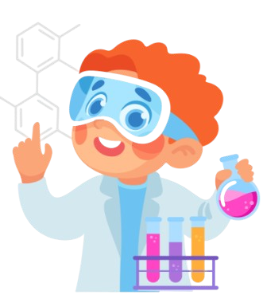
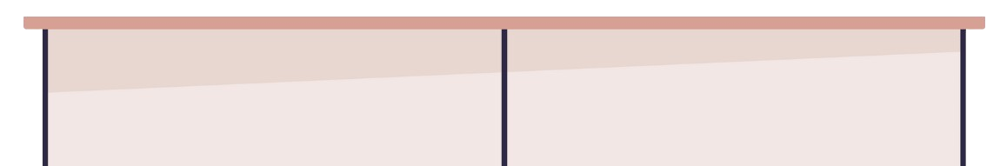
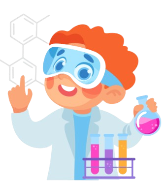
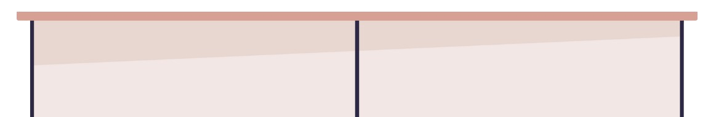
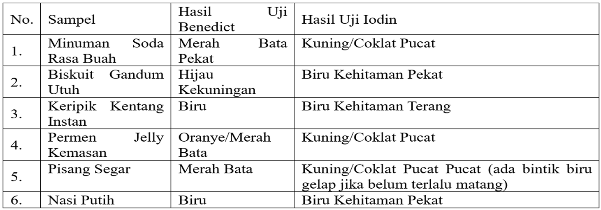

Peserta didik mampu menganalisis struktur dan fungsi biomolekul utama (karbohidrat, protein, lemak, vitamin, dan mineral) serta peranannya dalam proses metabolisme tubuh manusia. Peserta didik juga mampu mengaitkan asupan zat makanan dengan kondisi kesehatan, termasuk dampaknya terhadap obesitas, melalui penyelidikan ilmiah dan pemanfaatan teknologi.
Virtual lab ini menggunakan materi biologi pada sub bab zat makanan. Kemudian platform ini mengimplementasikan pendekatan STEM (Science, Technology, Engineering, Mathematics) secara terpadu untuk mendalami materi zat makanan, sekaligus mengaitkannya dengan fenomena global dan nasional yang mendesak: obesitas. Virtual lab ini selaras dengan semangat Kurikulum Merdeka, yang mendorong pembelajaran berbasis pemecahan masalah, dan dan kontekstual. Peserta didik tidak hanya menghafal fakta, tetapi diajak untuk berpikir kritis, bereksperimen, menganalisis data, dan merumuskan solusi atas masalah nyata. Pembelajaran menjadi lebih bermakna karena relevan dengan isu kesehatan yang dekat dengan kehidupan sehari-hari peserta didik.
dan kontekstual. Peserta didik tidak hanya menghafal fakta, tetapi diajak untuk berpikir kritis, bereksperimen, menganalisis data, dan merumuskan solusi atas masalah nyata. Pembelajaran menjadi lebih bermakna karena relevan dengan isu kesehatan yang dekat dengan kehidupan sehari-hari peserta didik.
Zat Makanan
Zat makanan merupakan bahan-bahan yang diperlukan oleh tubuh agar tetap hidup. Zat makanan dapat dibagi menjadi 2 jenis, yaitu zat makanan makro (karbohidrat, lemak, protein) dan zat makanan mikro (vitamin, mineral). Makanan memiliki berbagai fungsi, antara lain:
Selain itu, makanan juga memiliki persyaratan untuk mencapai makanan yang baik, sebagai berikut:
Syarat Makanan yang Baik (lanjutan)
Karbohidrat merupakan salah satu dari tiga makronutrien utama yang dibutuhkan oleh tubuh manusia, selain protein dan lemak Karbohidrat merupakan senyawa yang mengandung C,H, dan Odengan perbandingan H dan O = 2 : 1 dan dinyatakan dengan rumus umum Cn(H2O)n. Karbohidrat berperan penting baik sebagai sumber energi, komponen struktural sel, maupun molekul pengatur dalam proses metabolisme. Karbohidrat dapat ditemukan dalam berbagai bentuk dan sumber, mulai dari makanan sehari-hari seperti nasi, roti, gula, buah-buahan, hingga dalam struktur
dinding sel tumbuhan dan jaringan hewan. Secara struktur, Karbohidrat terbagi menjadi 3 yaitu, Monosakarida, Disakarida, dan Polisakarida. Monosakarida adalah bentuk paling sederhana dari karbohidrat dan tidak dapat dipecah lagi menjadi molekul gula yang lebih kecil melalui hidrolisis. Contoh monosakarida yang paling penting secara biologis adalah glukosa, yang merupakan sumber energi utama dalam sel-sel tubuh. Selain glukosa, terdapat pula fruktosa (gula buah) yang memiliki rasa lebih manis, dan galaktosa, yang biasanya ditemukan dalam susu sebagai komponen laktosa. Ketiga monosakarida ini memiliki rumus molekul
yang sama (C₆H₁₂O₆), tetapi berbeda dalam struktur isomeriknya, yang memengaruhi sifat kimia dan biologisnya
Gabungan dua monosakarida membentuk disakarida. Contohnya, glukosa dan fruktosa bergabung membentuk sukrosa (gula meja), glukosa dan galaktosa membentuk laktosa (gula susu), serta dua molekul glukosa membentuk maltosa (hasil pemecahan pati). Disakarida ini umum ditemukan dalam makanan dan harus dihidrolisis oleh enzim pencernaan seperti sukrase, laktase, dan maltase agar dapat diserap oleh usus halus. Kekurangan enzim tertentu, seperti laktase, dapat menyebabkan intoleransi laktosa, sebuah kondisi yang umum terjadi pada sebagian populasi manusia.
Jenis karbohidrat yang lebih kompleks adalah polisakarida, yaitu rantai panjang yang terdiri dari puluhan hingga ribuan unit monosakarida. Polisakarida memiliki fungsi utama sebagai cadangan energi dan komponen struktural. Contoh polisakarida penyimpan energi adalah amilum, yang merupakan bentuk penyimpanan karbohidrat pada tumbuhan, terutama di umbi-umbian, biji-bijian, dan kacang-kacangan. Amilum terdiri dari dua komponen: amilosa (rantai lurus glukosa) dan amilopektin (rantai bercabang). Kemudian, selulosa adalah polisakarida struktural yang menyusun dinding sel tumbuhan.
Karbohidrat memiliki peran dalam pengaturan metabolisme lemak dan protein. Saat asupan karbohidrat cukup, tubuh tidak perlu memecah protein otot untuk diubah menjadi glukosa (glukoneogenesis), sehingga protein dapat digunakan untuk fungsi pembentukan jaringan dan enzim. Karbohidrat juga mencegah terjadinya ketosis berlebihan, yaitu akumulasi keton tubuh akibat pembakaran lemak yang tidak sempurna saat kekurangan glukosa. Namun, meskipun penting, konsumsi karbohidrat yang tidak seimbang dapat menimbulkan dampak negatif terhadap kesehatan.
Karbohidrat olahan seperti gula tambahan, roti putih, dan makanan siap saji memiliki indeks glikemik (IG) tinggi, artinya cepat diubah menjadi glukosa dalam darah, menyebabkan lonjakan insulin. Pola konsumsi seperti ini secara kronis dapat menyebabkan resistensi insulin, diabetes tipe 2, obesitas, dan penyakit kardiovaskular.
Asam Lemak
Asam lemak adalah senyawa asam yang menyusun lemak. Asam lemak dibedakan menjadi dua, yaitu asam lemak jenuh dan asam lemak tidak jenuh. Asam lemak jenuh dapat disintesis tubuh sendiri, umumnya berbentuk padat (contoh: asam palmitat, stearat, dan kaprilat). Asam lemak tidak jenuh umumnya berbentuk cair dan tidak dapat disintesis tubuh sendiri sehingga harus diperoleh dari luar (contoh: asam oleat, linoleat, dan linolenat).
Lemak Tak Jenuh
Perbedaan utama dengan lemak jenuh: memiliki ≥1 ikatan rangkap C=C, umumnya cair pada suhu kamar, dan cenderung lebih baik bagi profil kolesterol. Contoh: minyak zaitun, minyak kedelai. Lemak jenuh hanya memiliki ikatan tunggal C–C, cenderung padat (lemak hewani, susu penuh krim), dan biasanya mengandung kolesterol lebih tinggi.
Protein merupakan senyawa esensial bagi semua makhluk hidup; kira-kira 20% tubuh tersusun atas protein dengan konsentrasi tertinggi pada jaringan otot. Protein tersusun atas unit sederhana bernama asam amino. Dari ~20 jenis asam amino, sebagian bersifat esensial (tidak dapat disintesis tubuh; harus dari makanan) seperti metionin, valin, leusin, dan isoleusin, sedangkan sisanya non-esensial (dapat disintesis tubuh) misalnya tirosin, sistein, serin, dan prolin.
Fungsi asam amino:
Fungsi Protein:
Jumlah Kebutuhan Protein Pada umumnya kebutuhan protein untuk orang dewasa adalah satu gram per kilogram berat badan per hari. Bila asupan protein berlebih, protein tersebut tidak dapat disimpan dalam tubuh, tetapi harus dikeluarkan, diubah, atau di gunakan
sehingga terjadi keseimbangan protein normal. Bila asupan protein kurang, protein hanya cukup untuk untuk mengatur dan mengganti sel rusak, tidak untuk pertumbuhan. Keseimbangan ini disebut keseimbangan protein minimum
Fenomena obesitas pada remaja menjadi isu kesehatan yang meresahkan di seluruh dunia, termasuk di Indonesia. Salah satu faktor utama yang sering disoroti adalah pola makan yang tidak seimbang, khususnya konsumsi gula berlebih dan asupan karbohidrat olahan yang tinggi. Banyak cemilan modern yang mengklaim sehat atau rendah gula, namun kenyataannya mungkin berbanding terbalik.
Di sebuah sekolah menengah, data terbaru menunjukkan peningkatan signifikan pada indeks massa tubuh (IMT) sebagian besar siswanya. Guru Biologi, Bu Amara, berinisiatif untuk mengajak siswanya menjadi.
siswanya menjadi “detektif gizi” untuk mengungkap misteri di balik cemilan favorit mereka. Tujuannya adalah untuk memahami kandungan gula pereduksi dan pati (amilum) pada beberapa cemilan populer yang sering dikonsumsi siswa, dan menghubungkannya dengan potensi risiko obesitas.
Bu Amara menantang kelompok siswa untuk menguji beberapa sampel cemilan yang umum beredar, yang sering dikonsumsi sebagai pengganjal lapar atau pengganti makanan utama. Mereka harus mengidentifikasi cemilan mana yang tinggi gula pereduksi dan/atau tinggi pati, dan kemudian menganalisis implikasinya.
terhadap asupan kalori dan risiko obesitas. Sampel Cemilan yang Diuji:
Prosedur Pengujian Laboratorium:
A. Uji Benedict (untuk mendeteksi gula pereduksi)
B. Uji Iodin (untuk mendeteksi pati/amilum)
Hasil Uji yang didapatkan :

Analisislah berdasarkan hasil pengamatan yang didapatkan, kemudian jawablah sesuai pertanyaan dibawah ini. Berikan alasan yang tepat!
6. Kumpulkan hasil yang Anda kerjakan pada kode QR di bawah ini: